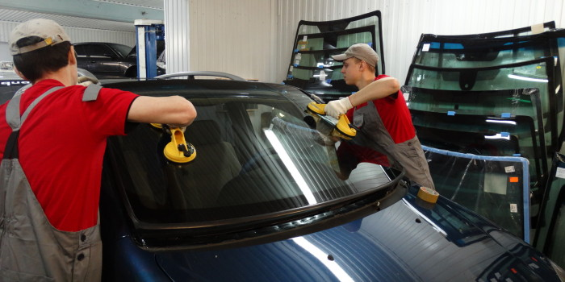

АВТО АПТЕКА
Кузовные работы
+7 (995) 110 32 12
avtoapteka02@mail.ru
avtoapteka02@mail.ru
9:00 - 18:00
Понедельник - Пятница
Понедельник - Пятница
ЗАМЕНА АВТОМОБИЛЬНЫХ СТЕКОЛ
Нужно выполнить замену автомобильного стекла в комплексе с ремонтом после аварии? В Краснодаре этим занимается автосервис Авто Аптека. Мы все делаем быстро, профессионально, качественно и недорого. Поменять лобовое, боковое или задней автостекло — это к нам. Приезжайте к нам по адресу: х. Ленина МТФ-1

Услуга по замене автомобильного стекла востребована еще с давних времен, когда только появились первые автомобили. После ДТП зачастую стекла подвергаются девормации, и даже если оно полностью не разрушено, а появилась лишь небольшая трещина — не стоит ее оставлять на потом. Такая трещина сразу нарушает геометрическую прочность стекла, при малейшем увеличении давления на поврежденную область, она моментально увеличивается и может закрывать значительную зону видимости водителя, тем самым препятствуя безопасному вождению. Существуют определенные требования безопасности, которые строго регламентируют возможные помехи и искажения в зоне водительской стекла. Более того, это просто некомфортно и неудобно.
КАК ПРОИСХОДИТ ПОВРЕЖДЕНИЕ АВТОМОБИЛЬНОГО
СТЕКЛА?
Множество аварий сопровождаются повреждением лобового, заднего, и боковых стекол. Отдельно можно выделить наиболее честые лобовые столкновения. Конечно, в таких случаях чаще всего происходят сопутствующие повреждения лобового стекла автомобиля, не намного реже при авариях повреждаются задние и боковые стекла автомобиля.

Но что же делать если у Вашего автомобиля повреждено стекло и оно не только нарушает эстетический вид, но и препятствует комфортной езде, ограничивая видимость дороги водителем? Выход есть, благодаря современным технологиям можно произвести даже сложную замену в очень короткое время! При этом очень важно знать что правильное установленное лобовое стекло — это гарантия безопасности водителя и пассажиров. Процедура по замене лобового стекла требует большой ответственности, поэтому далеко не каждый профессиональный механик возьмется за его замену. Одно из важнейших факторов является правильная и безупречная посадка стекла, что могут сделать далеко не все мастера. Ведь при неправильном монтаже, стекло становиться более уязвимо к повреждениям, из-за неправильно распределенной нагрузки, а при дождливой погоде оно может пропускать воду в салон, и доставить множество неприятностей.
АВТО АПТЕКА
Кузовные работы
Мы знаем, что честность и прозрачность в сочетании с надежным и дружелюбным обслуживанием клиентов - это то, что действительно укрепляет доверие клиентов.
Контактная информация